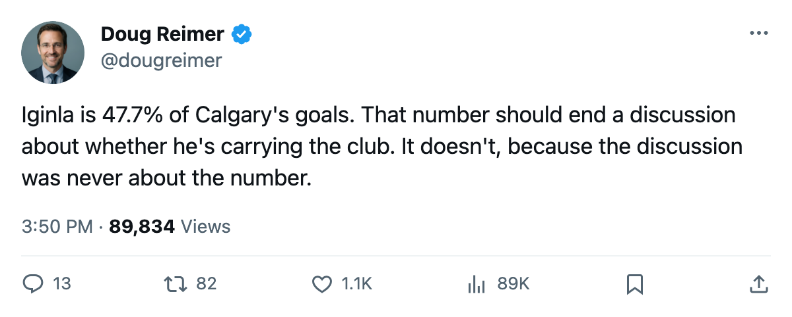
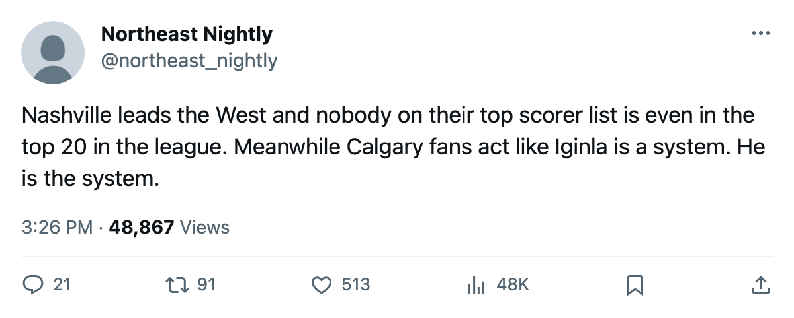

VAN
VAN47.7% to 21.4%: The League's Top Scorer Carries 23 Points of the Gap Between the Most Concentrated and Most Spread Club
Calgary needs Iginla for nearly half its goals. Nashville gets just over a fifth from Legwand and leads the West. Concentration maps poorly onto wins.
 Doug ReimerAnalytics editor, ex-video coach · The Slot Report
Doug ReimerAnalytics editor, ex-video coach · The Slot Report Jarome Iginla92 scored 92 of
Jarome Iginla92 scored 92 of  Calgary Flames's 193 goals. That is 47.7% of everything his club puts in the net. No other man in the 12-club sample the desk computed carries a share above 38.8%. At the other end,
Calgary Flames's 193 goals. That is 47.7% of everything his club puts in the net. No other man in the 12-club sample the desk computed carries a share above 38.8%. At the other end,  David Legwand90 provides 21.4% of
David Legwand90 provides 21.4% of  Nashville Predators's goals, and Nashville sits first in the West with 90 points.
Nashville Predators's goals, and Nashville sits first in the West with 90 points.
The method: take each club's leading goal scorer, divide his total by the club's season goals-for, rank the result. Where that leaves off, the desk pulled the number of players at 20 goals or more, which shows whether the club's depth can absorb the loss of the top man.
The spread is wider than the standings
The table below covers the 12 clubs where the desk captured the top scorer's share. The right-hand column counts 20-goal men.
| Club | Top scorer | Goals | Team GF | Share | Players at 20+ | Points |
|---|---|---|---|---|---|---|
| CGY | Iginla | 92 | 193 | 47.7% | 6 | 54 |
| ANA | Fedorov | 76 | 196 | 38.8% | 4 | 82 |
| CHI | Daze | 70 | 202 | 34.7% | 9 | 59 |
| WSH | Jagr | 82 | 244 | 33.6% | 8 | 85 |
| OTT | Hossa | 63 | 212 | 29.7% | 8 | 63 |
| CAR | O'Neill | 66 | 238 | 27.7% | 6 | 81 |
| DAL | Modano | 65 | 238 | 27.3% | 8 | 87 |
| SJ | Marleau | 49 | 183 | 26.8% | 4 | 61 |
| VAN | Naslund | 64 | 249 | 25.7% | 6 | 90 |
| BUF | Satan | 52 | 210 | 24.8% | 9 | 65 |
| MIN | Hecht | 47 | 201 | 23.4% | 7 | 57 |
| NSH | Legwand | 48 | 224 | 21.4% | 7 | 90 |
Iginla's share is 26.3 points of offense above Legwand's. The two clubs sit 36 points apart in the standings. Concentration at the top does not predict the bottom of the table.
What the 20-goal count says about the rest
All 30 clubs: the spread runs from 12 players at 20 or more ( Toronto Maple Leafs) down to 4 (
Toronto Maple Leafs) down to 4 ( Columbus Blue Jackets,
Columbus Blue Jackets,  San Jose Sharks,
San Jose Sharks,  Mighty Ducks of Anaheim). Nashville Predators fields 7 and carries 90 points.
Mighty Ducks of Anaheim). Nashville Predators fields 7 and carries 90 points.  Chicago Blackhawks has 9 and 59 points. The count by itself tells you almost nothing about a win total.
Chicago Blackhawks has 9 and 59 points. The count by itself tells you almost nothing about a win total.
What matters is whether the top scorer's departure would collapse the club. At Calgary, remove Iginla's 92 from the team total of 193, and 5 other players cleared 20 goals. The club finished 54 points. At Nashville Predators, remove Legwand's 48 from 224 and 176 remain spread across 6 other 20-goal men.
The mis-allocated resource underneath
The desk's standing finding holds here: Mighty Ducks of Anaheim runs  Sergei Fedorov90 on 38.8% of its offense with only 4 players at 20 goals.
Sergei Fedorov90 on 38.8% of its offense with only 4 players at 20 goals.  Jean-Sebastien Giguere97 carries 86% of the goaltending load at a grade of 94. The club reaches 82 points and holds 6th in the West. Fedorov sits 22.9 minutes a night. The 4 twenty-goal men include
Jean-Sebastien Giguere97 carries 86% of the goaltending load at a grade of 94. The club reaches 82 points and holds 6th in the West. Fedorov sits 22.9 minutes a night. The 4 twenty-goal men include  Alexander Mogilny87 and
Alexander Mogilny87 and  Paul Kariya89 at different positions from center.
Paul Kariya89 at different positions from center.
At Columbus Blue Jackets,  Geoff Sanderson86 runs 58 goals across 21.9 minutes a night. The club has 4 players at 20 goals and 12 at 10. CBJ sits 5 points out of 8th with 16 games left. The depth exists at the 10-goal level but does not convert to 20-goal production.
Geoff Sanderson86 runs 58 goals across 21.9 minutes a night. The club has 4 players at 20 goals and 12 at 10. CBJ sits 5 points out of 8th with 16 games left. The depth exists at the 10-goal level but does not convert to 20-goal production.
 Evgeni Nabokov91 carried San Jose Sharks at 84% of its minutes at a grade of 88, with only 4 players at 20 goals.
Evgeni Nabokov91 carried San Jose Sharks at 84% of its minutes at a grade of 88, with only 4 players at 20 goals.  Patrick Marleau89 at 49 goals and 26.8% of the offense is the club's ceiling. The Sharks hold 61 points and 12th in the West.
Patrick Marleau89 at 49 goals and 26.8% of the offense is the club's ceiling. The Sharks hold 61 points and 12th in the West.
The club that needs a man to score half its goals and the club that needs a man to score a fifth can finish one line apart in the table. What separates them is everything below the first line. The deadline is 10 days away. The structural gap does not close by June.

